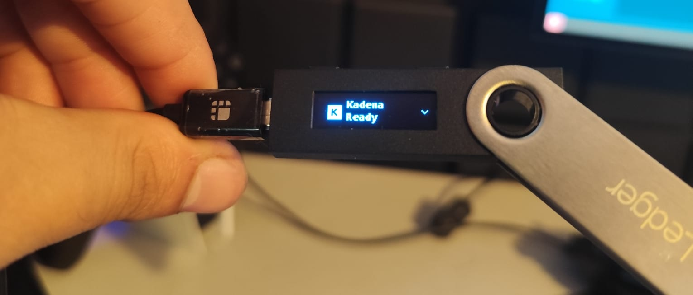
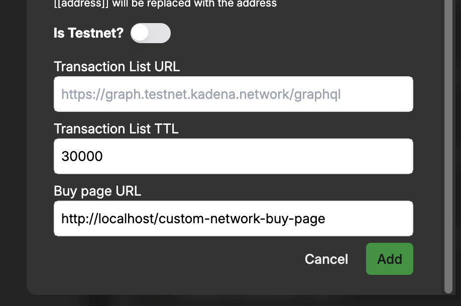
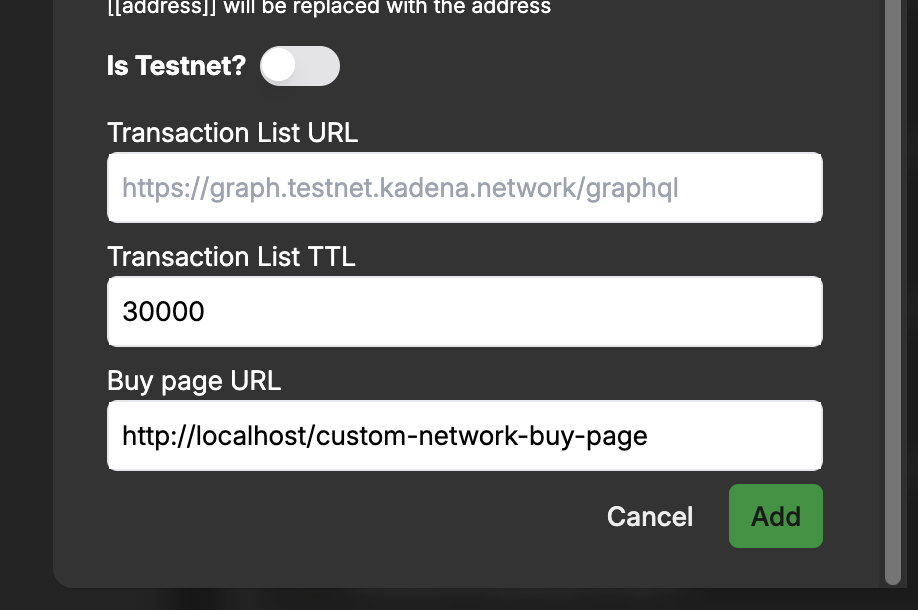

Welcome to snaK
snaK is your gateway to Kadena blockchain through MetaMask. This documentation will help you:
- Get started with snaK as a user
- Integrate snaK into your dApp as a developer
- Understand how snaK works under the hood
Quick Links
- User Guide - For wallet users
- SDK Quickstart - For developers
- FAQs - Common questions
snaK brings Kadena's powerful multi-chain capabilities to MetaMask users, enabling seamless interaction with Kadena dApps while maintaining MetaMask's security and convenience.
Introduction
MetaMask is a popular Ethereum wallet and browser extension that developers can integrate into a variety of third-party applications. MetaMask Snaps is an open-source solution to enhance MetaMask’s functionalities beyond its native capabilities.
snaK enables users to interact directly with the Kadena blockchain without relying on traditional JSON-RPC endpoints, offering Kadena-native functionalities like sending $KDA, performing cross-chain transfers, and retrieving account information. Initially developed by the Kadena Community, it's now maintained by Mindsend Datatech.
What is a Snap?
MetaMask Snaps is an open-source framework allowing secure extensions to MetaMask, enhancing Web3 user experiences. It empowers the addition of new API methods, supports various blockchain protocols, and tweaks existing functionalities via the Snaps JSON-RPC API.
Snaps enable users to interact with new blockchains, protocols, and decentralized applications (dApps) beyond what is natively supported by MetaMask. The goal of the MetaMask Snaps system is to create a more open, customizable, and extensible wallet experience for users while fostering innovation and collaboration within the blockchain and decentralized application ecosystem.
üìö Learn more:
Getting Started with snaK
snaK is a MetaMask extension that brings Kadena-native capabilities—like account creation, transaction signing, and cross-chain transfers—directly into your MetaMask wallet.
This guide walks you through installing the snaK Snap and using it via dApps that support it.
Installation
Before you can use snaK, you must have MetaMask installed and configured in your browser.
- Visit the official MetaMask Snap Directory and locate snaK.
- Click Install to grant permissions and enable the Snap.
- The Snap will now be available inside your MetaMask under the “Snaps” section.
üí° When installed, the Snap runs isolated from other extensions, using MetaMask‚Äôs permissioned execution model for enhanced security.
Using snaK
Once installed, snaK can be accessed via supported decentralized applications (dApps). You don’t interact with it directly through MetaMask—it activates automatically when the connected site uses Snap methods.
The web interface for interacting with snaK is available at snak.mindsend.xyz.
Here’s what you can do with the Snap-enabled dApp:
-
Create a Kadena Account:
Click “+ Add Account” to generate a new Kadena account managed by the Snap. -
Send and Receive $KDA:
Use the dApp’s interface to send and receive KDA tokens across any of Kadena’s 20 chains. -
Sign Transactions Securely:
When a dApp sends a transaction request, MetaMask will trigger a secure popup for approval. -
Perform Cross-Chain Transfers:
The Snap abstracts the complexity of transferring KDA between Kadena’s braided chains. -
Buy $KDA:
Integrated onramp support (e.g., Simplex) allows you to purchase KDA within the dApp. -
Use Gas Stations:
Fee abstraction via Kadena’s gas stations ensures transactions can be executed without the sender owning KDA initially. -
Ledger Support:
The Snap can store Ledger-based Kadena accounts (signing must be handled manually by the dApp). -
View Balances & Activity:
The dApp can show balances and recent transactions using Snap-stored accounts.
Learn More
- Kadena Snap NPM Package: https://www.npmjs.com/package/@mindsend/kadena-snap
- Kadena Snap Audit Report: View PDF
- MetaMask Snap Docs: docs.metamask.io/guide/snaps.html
Snap Architecture
What does snaK look like under the hood?

One of the primary benefits of developing and using a Snap like snaK in your application is that it inherits the security model of MetaMask. Each Snap runs in its own isolated execution environment, completely sandboxed from other Snaps and browser extensions.
In the case of snaK, this isolation is crucial because the Snap manages private keys for Kadena accounts derived from the user's MetaMask seed phrase or imported independently. The Snap exposes a minimal set of RPC APIs, such as:
create-accountshow-accounttransfer
These functions allow secure interaction with the Chainweb network while keeping private key material inaccessible to the application.
Secure Storage and Execution
Within snaK, key data such as:
Private KeyPublic KeyAccount IDChain ID
are stored in internal Snap state. Only the Snap has access to this information. The RPC API handler gates all external access and enforces capability-based restrictions.
The Snap is also responsible for managing the current account context, ensuring actions are executed against the correct wallet index and chain ID.
Why it Matters
This architecture ensures that:
- No external dApp or Snap can access your private keys.
- All transactions must be explicitly signed via the Snap interface.
- The Snap can support multiple chain IDs in Kadena’s multi-chain architecture.
- Users retain full control over account selection and transaction authorization.
By leveraging MetaMask's Snap framework, snaK ensures high-security interaction with the Kadena blockchain, giving developers and users a reliable tool for integrating Web3 functionality with native wallet capabilities.
Frequently Asked Questions (FAQ)
How do I install snaK?
For users:
You can install snaK through the MetaMask Snaps Directory. After installation, access it through: MetaMask → Settings → Snaps → snaK
For developers integrating snaK:
Ensure MetaMask is installed in your browser. snaK can be installed via a supported dApp or manually through the MetaMask Snaps Directory.
Note that Snaps have minimal UI. To unlock the full functionality, dApps must integrate directly with the Snap's RPC API. You can view our demo app for reference and SDK usage.
What are MetaMask Snaps?
MetaMask Snaps are secure, sandboxed extensions that add new features to MetaMask. Snaps can add support for new protocols (like Kadena), handle signing flows, show custom notifications, or introduce new account models.
Are Snaps safe to use?
Yes. Snaps are sandboxed and can only access what users explicitly approve. They cannot access your MetaMask private keys or seed phrase. Every Snap declares its required permissions during installation, and MetaMask handles consent.
Can I interact with snaK directly in MetaMask?
Not directly. snaK is designed to be accessed through a dApp using the exposed Snap RPC methods. These methods enable account creation, balance queries, and transaction signing.
We provide a reference frontend for users to handle basic wallet operations and an SDK and wallet adapter to help dApps integrate snaK.
Why is my snaK address different from my MetaMask address?
snaK generates a new Kadena key pair using entropy provided by MetaMask, not by accessing the seed phrase directly. This ensures your snaK account is securely tied to your MetaMask account, but operates independently from Ethereum addresses.
This snaK-generated account is stored securely in isolated state and used for signing Kadena transactions.
Can I import an existing Kadena account?
Not yet. For now, snaK only supports generating new Kadena accounts using MetaMask-provided entropy. Importing external private keys is not currently supported, but may be added in a future release.
What happens if I uninstall snaK?
If you uninstall snaK and later reinstall it while using the same MetaMask seed phrase, the same snaK account(s) will be restored automatically.
Your account derivation is based on MetaMask entropy, so snaK can recover accounts deterministically without storing them externally.
Can I export the private key of my snaK account?
Not yet. For security reasons, snaK does not currently support exporting private keys. This may be supported in the future with proper UI/UX and user confirmation flows via MetaMask.
Is snaK available on MetaMask Mobile?
Not yet. MetaMask Mobile does not currently support Snaps. snaK is available only in desktop browser extensions (Chrome, Firefox, Brave). MetaMask has announced upcoming support for Snaps on mobile.
Troubleshooting Common Issues
Prompt to install MetaMask even when it's already installed?
Check if you have other wallets (like Koala Wallet) interfering with window.ethereum.
Ledger connection issues?
- Ensure you're using a supported browser (Chrome/Edge/Opera)
- Make sure the Kadena app is open on your Ledger
- Try a different USB cable or port
- Check that HID permissions are granted in your browser
Where can I get support?
For general support and questions, please use these channels:
Our team monitors these channels and will respond to inquiries as quickly as possible.
Support
While we strive to make our documentation comprehensive, sometimes you may need additional help. Here are the official support channels:
Official Support Channels
-
Support Portal
For technical issues and bug reports:
https://support.mindsend.xyz/ -
Community Discord
For general questions and community support:
https://discord.gg/CZzZSKxzWP
Before Contacting Support
To help us serve you better, please:
- Check the FAQs first - your question may already be answered
- Have your MetaMask version and browser information ready
- For technical issues, include steps to reproduce the problem
Issue Prioritization
We prioritize issues based on:
- Security vulnerabilities (highest priority)
- Functionality-breaking bugs
- Feature requests
- General questions
We respond to support requests as quickly as we can.
snaK User Guide
This guide walks you through the steps to connect your MetaMask wallet to snaK, install it, approve permissions, and perform basic operations like switching networks and sending $KDA.
What is snaK?
snaK is a custom MetaMask Snap that allows users to interact directly with the Kadena blockchain. It enables you to:
- Manage Kadena accounts securely inside MetaMask
- Perform cross-chain transfers across Kadena's 20 chains
- Sign and send transactions using $KDA
- View account balances and activity
- Use gas stations to simplify fees
- Buy KDA through integrated fiat onramps
snaK is fully isolated, permissions-based, and built using MetaMask’s secure extensibility model.
Who is this guide for?
This guide is intended for:
- Users who want to manage $KDA from within MetaMask
- Developers building dApps that integrate with snaK
- Testers exploring snaK capabilities on testnet
No prior knowledge of Kadena or Snaps is required, though basic familiarity with MetaMask is helpful.
What you'll need
Before getting started, make sure you have:
- ✅ MetaMask installed in your browser
- ✅ Access to a Snap-compatible dApp (or localhost test setup)
- ✅ Some $KDA (use the faucet if testing)
- ✅ Basic understanding of MetaMask permissions
üí° You can install snaK even without a dApp using the MetaMask Snap Directory.
What this guide covers
This guide includes:
- Connecting your MetaMask wallet
- Installing and approving snaK
- Using snaK to send transactions
- Switching to the testnet (optional)
- Funding accounts via faucet
- Using advanced Snap features like cross-chain transfers
You’re now ready to explore snaK and unlock full-chain functionality from right inside MetaMask.
Troubleshooting
Common Issues
-
Accounts not appearing?
✅ Ensure MetaMask is fully unlocked
✅ Check that snaK is properly installed
✅ Refresh the dApp page -
Transactions failing?
üîπ Verify you have enough KDA for gas
üîπ Confirm the correct chain is selected
üîπ Check network status at status.kadena.io -
Connection problems?
üîÑ Try reconnecting your wallet
üîÑ Reinstall snaK if needed (accounts will recover)
Security Guidelines
⚠️ Important Security Notes
-
Your KDA accounts are generated from your MetaMask seed phrase
-
The same security practices for ETH apply to your KDA:
- Never share your recovery phrase
- Use a hardware wallet for maximum security
- Be cautious of phishing sites
-
Always verify:
- Transaction details in MetaMask popups
- Website URLs before connecting
- Contract addresses when interacting with dApps
üîí Best Practices
- Regularly review connected sites in MetaMask
- Keep your browser and MetaMask updated
- Consider using a dedicated wallet for snaK
Connect to snaK
When visiting a dApp that uses snaK, you’ll be prompted to connect your MetaMask wallet.

Your Kadena account will be derived from your MetaMask Secret Recovery Phrase.
üîê Security Implications
- One seed phrase controls both ETH and KDA assets
- Compromising the seed compromises both chains
- Store it as securely as you would for crypto assets
üí° Protection Tips
- Use a hardware wallet for your MetaMask seed
- Never enter your phrase on any website
- Bookmark official dApps to avoid phishing
- Enable MetaMask's phishing detection
Approve the snaK Connection Request
MetaMask will display a connection request, asking you to approve the origin (e.g., http://localhost:8080).

Click "Connect" to proceed.
Approve Permissions to Add snaK
You’ll now be asked to install snaK, which includes requesting permissions:
- Manage Kadena accounts
- Display dialog windows in MetaMask
- Display a custom screen

Click "Confirm" to continue.
Confirm Final snaK Permissions
MetaMask may show a final prompt to "Proceed with caution", requesting permission to manage your Kadena accounts.

Check the box to Install snaK and click Confirm to proceed.
snaK Installed Successfully
Once installed, MetaMask will display confirmation that snaK is ready to use.

Click OK to return to the dApp.
Fund Your Account (Using Faucet)
To perform any transaction, your new account needs $KDA. Use the official faucet:
üîó Kadena Faucet
Once funded, you’ll see a screen like this while a transaction is being processed:

Using Ledger with snaK
This guide walks you through how to connect and use your Ledger Hardware Wallet with snaK.
✅ Tested with Ledger Nano S
üîí Requires HID permission to be granted to your browser
üõ†Ô∏è snaK provides similar functionality to the official Kadena Transfer tool, but integrated directly into your wallet flow ‚Äî no extra tabs or context switching required.
Browser Compatibility
navigator.hidis required for Ledger support. Only available in HTTPS secure contexts and supported by Chromium-based desktop browsers.
| Browser | Support |
|---|---|
| Desktop Browsers | |
| Chrome | ✅ 89+ |
| Edge | ✅ 89+ |
| Firefox | ❌ No |
| Opera | ✅ 75+ |
| Safari | ❌ No |
| Mobile Browsers | |
| Chrome Android | ❌ No |
| Firefox Android | ❌ No |
| Opera Android | ❌ No |
| Safari iOS | ❌ No |
| Samsung Internet | ❌ No |
| WebView Android | ❌ No |
| Other Platforms | |
| Deno | ❓ ? |
| Node.js | ❌ No |
1. Install Kadena App on Ledger
- Open Ledger Live.
- Go to My Ledger.
- Search for Kadena and install the app.

2. Open Kadena App on Ledger

After installation:
- Unlock your Ledger.
- Navigate to and open the Kadena app on the device.
- You should see the message:
Kadena is ready.

üìå If you haven't opened the app, snaK will prompt you to open it on your Ledger.
3. Add a Ledger Account in snaK
- In snaK, click Add + in the sidebar.
- Select Ledger account.

4. Grant HID Permission
If it's your first time connecting a Ledger:
- You’ll see a browser prompt asking for permission to connect to a HID device.
- Select your Ledger device and click Connect.

5. You're Done
Your Ledger account is now added and ready to use! üéâ
You can now sign and send transactions from this account as described in other guides (e.g., Send KDA).
Official Ledger Guide
For a detailed step-by-step guide from Ledger (including how to use Kadena Transfer), check out:
üìÑ Ledger‚Äôs official Kadena guide
This includes installation instructions and general advice for managing KDA safely.
Ledger-Specific Troubleshooting
Connection Issues
- If your Ledger isn't detected:
- Ensure the Kadena app is open on your device
- Try reconnecting the USB cable
- Restart your browser
- Check browser HID permissions (chrome://settings/content/hid)
Transaction Errors
- "Device disconnected" during signing:
- Keep the Kadena app open throughout the process
- Avoid screen timeout on your Ledger
- Check for firmware updates in Ledger Live
Browser Compatibility
- If HID permissions aren't available:
- Switch to Chrome/Edge/Opera (desktop versions only)
- Ensure you're on HTTPS
- Disable any wallet-extensions that might interfere
Additional Resources
-
üîë Keys are derived the same way as in:
https://transfer.chainweb.com/transactions/transfer -
üß≠ Ledger Quickstart:
https://www.ledger.com/start
Switching Networks (Optional)
If the dApp requires you to use the Kadena Testnet, you’ll be prompted to approve the network switch.

Click Aprovar (Approve) to allow switching to the testnet.
Sending KDA
After funding your account, you can send $KDA to other accounts or perform cross-chain transfers using the snaK interface.

- From Account: Your Kadena address
- To account: Recipient address
- To chain: Select destination chain (e.g., Chain 1–20)
- Amount: Amount of $KDA
- Gas Fee: Usually prefilled
Click Send to broadcast your transaction.
Signing Transactions

Add a Custom Network on snaK
⚠️ To add networks, Dev Mode must be enabled. Without it, the "Add Network" button is hidden.
1. Enable Developer Mode
- Open snaK.
- Toggle Dev Mode ON (top-right of the app).

2. Add Custom Network
- Open the network dropdown.
- Click Add Network.
- Fill in the fields:
 

| Field | Example |
|---|---|
| Name | Mindsend Mainnet |
| Network ID | mainnet01 |
| Node URL | https://chainweb.mindsend.xyz/chainweb/0.0 |
| Explorer Transaction URL | https://explorer.chainweb.com/mainnet/tx/[[txHash]] |
| Explorer Address URL | https://explorer.chainweb.com/mainnet/account/[[address]] |
| Explorer Address Transactions | https://explorer.chainweb.com/mainnet/transfer/[[address]] |
| Is Testnet? | Enable if it's a testnet |
| Transaction List URL | https://graph.kadena.network/graphql |
| Transaction List TTL | 30000 |
| Buy Page URL | (Optional) |
- Click Send.
- Approve the request in the popup.

✅ Your network is now available in the dropdown.
Dev Quickstart
Kadena Snap RPC Calls Documentation
This documentation covers the RPC methods provided by the Kadena Snap, allowing interaction with the Kadena blockchain via MetaMask. The Kadena Snap provides methods for checking connection status, managing accounts, interacting with networks, and signing transactions.
Table of Contents
- Available RPC Methods
- kda_checkConnection
- kda_addAccount
- kda_addHardwareAccount
- kda_deleteAccount
- kda_deleteHardwareAccount
- kda_getAccounts
- kda_getHardwareAccounts
- kda_getNetworks
- kda_storeNetwork
- kda_deleteNetwork
- kda_getActiveNetwork
- kda_setActiveNetwork
- kda_setAccountName
- kda_setHardwareAccountName
- kda_signTransaction
Type Definitions
Below are the type definitions used in the Kadena Snap RPC calls. These types help ensure type safety and clarity when working with the RPC methods.
type CheckConnectionResponse = boolean;
type SnapAccount = {
id: string;
address: string;
publicKey: string;
index: number;
name: string;
};
type CreateAccountResponse = SnapAccount;
type GetAccountsResponse = SnapAccount[];
type DeleteAccountParams = {
id: string;
};
type DeleteHardwareAccountParams = {
id: string;
};
type SnapNetwork = {
name: string;
networkId: string;
blockExplorerTransaction: string;
blockExplorerAddress: string;
blockExplorerAddressTransactions: string;
isTestnet: boolean;
nodeUrl: string;
transactionListUrl: string;
transactionListTtl: number;
buyPageUrl: string;
};
type GetNetworksResponse = SnapNetwork[];
type StoreNetworkParams = {
network: SnapNetwork;
};
type DeleteNetworkParams = {
networkId: string;
};
type GetActiveNetworkResponse = string;
type SetActiveNetworkParams = {
networkId: string;
};
type SetAccountNameParams = {
id: string;
name: string;
};
type SetHardwareAccountNameParams = {
id: string;
name: string;
};
type SignTransactionParams = {
id: string;
transaction: string;
};
type SignTransactionResponse = string;
Available RPC Methods
kda_checkConnection
Description: Checks if the Kadena Snap is connected.
Request Example:
const isConnected = await window.ethereum.request({
method: 'wallet_invokeSnap',
params: {
snapId: defaultSnapOrigin,
request: { method: 'kda_checkConnection' },
},
});
Response: CheckConnectionResponse
kda_addAccount
Description: Derives a new account from the Kadena Snap.
Request Example:
const account = await window.ethereum.request({
method: 'wallet_invokeSnap',
params: {
snapId: defaultSnapOrigin,
request: { method: 'kda_addAccount' },
},
});
Response: SnapAccount
kda_addHardwareAccount
Description: Adds a new hardware account from the Kadena Ledger App.
Request Example:
const account = await window.ethereum.request({
method: 'wallet_invokeSnap',
params: {
snapId: defaultSnapOrigin,
request: {
method: 'kda_addHardwareAccount',
params: {
index: 0,
address: '<address>',
publicKey: '<publicKey>',
},
},
},
});
Response: SnapAccount
kda_deleteAccount
Description: Deletes an account by its ID on Kadena Snap.
Request Example:
await window.ethereum.request({
method: 'wallet_invokeSnap',
params: {
snapId: defaultSnapOrigin,
request: {
method: 'kda_deleteAccount',
params: { id: '<id>' },
},
},
});
Response: None
kda_deleteHardwareAccount
Description: Deletes a hardware account by its ID on Kadena Snap.
Request Example:
await window.ethereum.request({
method: 'wallet_invokeSnap',
params: {
snapId: defaultSnapOrigin,
request: {
method: 'kda_deleteHardwareAccount',
params: { id: '<id>' },
},
},
});
Response: None
kda_getAccounts
Description: Retrieves all accounts from the Kadena Snap.
Request Example:
const accounts = await window.ethereum.request({
method: 'wallet_invokeSnap',
params: {
snapId: defaultSnapOrigin,
request: { method: 'kda_getAccounts' },
},
});
Response: SnapAccount[]
kda_getHardwareAccounts
Description: Retrieves all hardware accounts from the Kadena Snap.
Request Example:
const hardwareAccounts = await window.ethereum.request({
method: 'wallet_invokeSnap',
params: {
snapId: defaultSnapOrigin,
request: { method: 'kda_getHardwareAccounts' },
},
});
Response: SnapAccount[]
kda_getNetworks
Description: Retrieves all networks from the Kadena Snap.
Request Example:
const networks = await window.ethereum.request({
method: 'wallet_invokeSnap',
params: {
snapId: defaultSnapOrigin,
request: { method: 'kda_getNetworks' },
},
});
Response: SnapNetwork[]
kda_storeNetwork
Description: Adds a network to the Kadena Snap.
Request Example:
await window.ethereum.request({
method: 'wallet_invokeSnap',
params: {
snapId: defaultSnapOrigin,
request: {
method: 'kda_storeNetwork',
params: {
network: {
name: 'New Network',
chainId: 1,
networkId: 'new-network-id',
nodeUrl: 'https://new-network-node.url',
blockExplorerTransaction: 'https://explorer.url/tx/{txId}',
blockExplorerAddress: 'https://explorer.url/address/{address}',
isTestnet: true,
},
},
},
},
});
Response: SnapNetwork
kda_deleteNetwork
Description: Deletes a network from the Kadena Snap.
Request Example:
await window.ethereum.request({
method: 'wallet_invokeSnap',
params: {
snapId: defaultSnapOrigin,
request: {
method: 'kda_deleteNetwork',
params: { networkId: '<networkId>' },
},
},
});
Response: None
kda_getActiveNetwork
Description: Retrieves the active network from the Kadena Snap.
Request Example:
const activeNetwork = await window.ethereum.request({
method: 'wallet_invokeSnap',
params: {
snapId: defaultSnapOrigin,
request: { method: 'kda_getActiveNetwork' },
},
});
Response: GetActiveNetworkResponse
kda_setActiveNetwork
Description: Sets the active network in the Kadena Snap.
Request Example:
await window.ethereum.request({
method: 'wallet_invokeSnap',
params: {
snapId: defaultSnapOrigin,
request: {
method: 'kda_setActiveNetwork',
params: { networkId: '<networkId>' },
},
},
});
Response: None
kda_setAccountName
Description: Updates the name of an account in the Kadena Snap.
Request Example:
await window.ethereum.request({
method: 'wallet_invokeSnap',
params: {
snapId: defaultSnapOrigin,
request: {
method: 'kda_setAccountName',
params: {
id: '<id>',
name: 'New Account Name',
},
},
},
});
Response: None
kda_setHardwareAccountName
Description: Updates the name of a hardware account in the Kadena Snap.
Request Example:
await window.ethereum.request({
method: 'wallet_invokeSnap',
params: {
snapId: defaultSnapOrigin,
request: {
method: 'kda_setHardwareAccountName',
params: {
id: '<id>',
name: 'New Hardware Account Name',
},
},
},
});
Response: None
kda_signTransaction
Description: Signs a transaction using the Kadena Snap.
Request Example:
const signature = await window.ethereum.request({
method: 'wallet_invokeSnap',
params: {
snapId: defaultSnapOrigin,
request: {
method: 'kda_signTransaction',
params: {
id: '<id>',
transaction: '<Transaction Payload>',
},
},
},
});
Response: SignTransactionResponse
Example: useKadenaSnap Hook
To leverage these RPC methods in a React application, you can implement a custom hook, such as useKadenaSnap. This hook provides an interface for using the RPC methods within the React component lifecycle.
import { useState } from 'react';
import { SnapAccount, SnapNetwork } from '../types';
import { defaultSnapOrigin } from '../config/snap';
export default function useKadenaSnap() {
const [connected, setConnected] = useState<boolean>(false);
const checkConnection = async (): Promise<boolean> => {
try {
const isConnected = await window.ethereum.request<boolean>({
method: 'wallet_invokeSnap',
params: {
snapId: defaultSnapOrigin,
request: { method: 'kda_checkConnection' },
},
});
setConnected(isConnected !== undefined && isConnected !== null);
return isConnected ?? false;
} catch (error) {
console.error('Error checking connection:', error);
return false;
}
};
const addAccount = async (): Promise<SnapAccount> => {
try {
const response = await window.ethereum.request<SnapAccount>({
method: 'wallet_invokeSnap',
params: {
snapId: defaultSnapOrigin,
request: { method: 'kda_addAccount' },
},
});
if (
!response ||
!response.address ||
!response.publicKey ||
typeof response.index !== 'number' ||
!response.name
) {
throw new Error('Account creation failed: Missing essential data');
}
return response as SnapAccount;
} catch (error) {
console.error('Error creating account:', error);
throw error;
}
};
const getAccounts = async (): Promise<SnapAccount[]> => {
try {
const accounts = await window.ethereum.request<
(SnapAccount | undefined)[]
>({
method: 'wallet_invokeSnap',
params: {
snapId: defaultSnapOrigin,
request: { method: 'kda_getAccounts' },
},
});
if (!accounts) {
throw new Error('No accounts returned from Kadena snap');
}
return accounts.filter(
(account): account is SnapAccount => account !== undefined,
);
} catch (error) {
console.error('Error getting accounts:', error);
return [];
}
};
const getNetworks = async (): Promise<SnapNetwork[]> => {
try {
const networks = await window.ethereum.request<
(SnapNetwork | undefined)[]
>({
method: 'wallet_invokeSnap',
params: {
snapId: defaultSnapOrigin,
request: { method: 'kda_getNetworks' },
},
});
return (networks ?? []).filter(
(network): network is SnapNetwork => !!network,
);
} catch (error) {
console.error('Error getting networks:', error);
return [];
}
};
const addNetwork = async (
network: Partial<SnapNetwork>,
): Promise<Partial<SnapNetwork>> => {
try {
const newNetwork = await window.ethereum.request<SnapNetwork>({
method: 'wallet_invokeSnap',
params: {
snapId: defaultSnapOrigin,
request: {
method: 'kda_storeNetwork',
params: {
network: {
name: network.name!,
chainId: network.chainId!,
networkId: network.networkId!,
nodeUrl: network.nodeUrl!,
blockExplorerTransaction: network.blockExplorerTransaction!,
blockExplorerAddress: network.blockExplorerAddress!,
blockExplorerAddressTransactions:
network.blockExplorerAddressTransactions!,
isTestnet: network.isTestnet!,
transactionListUrl: network.transactionListUrl!,
transactionListTtl: network.transactionListTtl!,
buyPageUrl: network.buyPageUrl!,
},
},
},
},
});
if (!newNetwork) {
throw new Error('Failed to add network: No network returned');
}
return newNetwork;
} catch (error) {
console.error('Error adding network:', error);
throw error;
}
};
const deleteNetwork = async (networkId: string): Promise<void> => {
try {
await window.ethereum.request<void>({
method: 'wallet_invokeSnap',
params: {
snapId: defaultSnapOrigin,
request: {
method: 'kda_deleteNetwork',
params: { networkId },
},
},
});
} catch (error) {
console.error('Error deleting network:', error);
throw error;
}
};
const signMessage = async (
id: string,
transaction: string,
): Promise<string> => {
try {
const signature = await window.ethereum.request<string | undefined>({
method: 'wallet_invokeSnap',
params: {
snapId: defaultSnapOrigin,
request: {
method: 'kda_signTransaction',
params: { id, transaction },
},
},
});
if (!signature) {
throw new Error('Signing failed');
}
return signature.toString().replace('0x', '');
} catch (error) {
console.error('Error signing transaction:', error);
throw error;
}
};
return {
connected,
checkConnection,
addAccount,
getAccounts,
getNetworks,
addNetwork,
deleteNetwork,
signMessage,
};
}